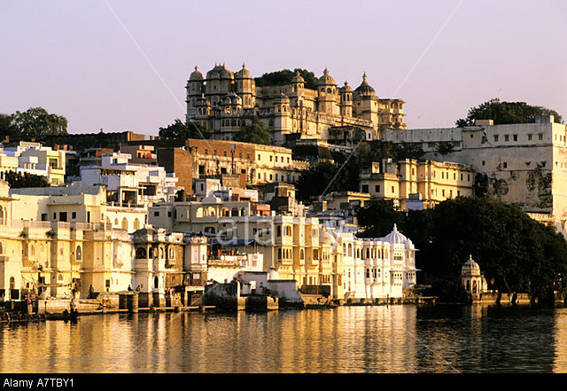

back
Capital City of Fandor

Fandor is the capital of the Kingdom of Fandor. It is where the King resides and where the royal guards are located. The city is a massive hub for humans, you have people of every trade and profession present in the city. The city is easy to live in and has everything you would expect from a capital. The city is situated in such fashion that just about every inn and house has a view on the great lake Tsundalis. The entire Kingdom of Fandor revolve around this city and most of the action and work are located around lake Tsundalis.